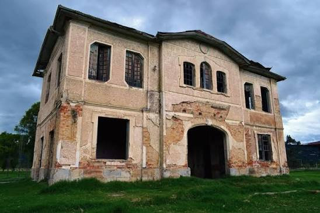
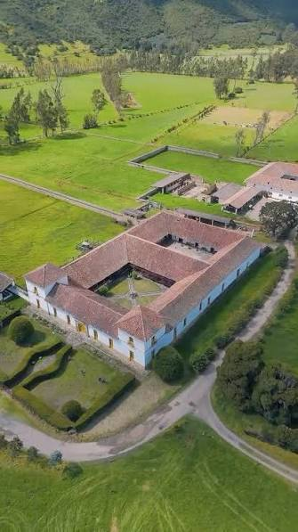

Parroquia Inmaculada Concepción
Templo de arquitectura colonial ubicado en la plaza principal, eje de la vida fe y tradición histórica local.
Recorre los monumentos e infraestructuras históricas que conservan la identidad colonial y republicana del municipio.
Templo de arquitectura colonial ubicado en la plaza principal, eje de la vida fe y tradición histórica local.

Construcción republicana que atestigua la época dorada del transporte ferroviario y el comercio en la sabana.

Viviendas de bahareque y tapia pisada con balcones de madera y tejas de barro conservadas en el centro urbano.